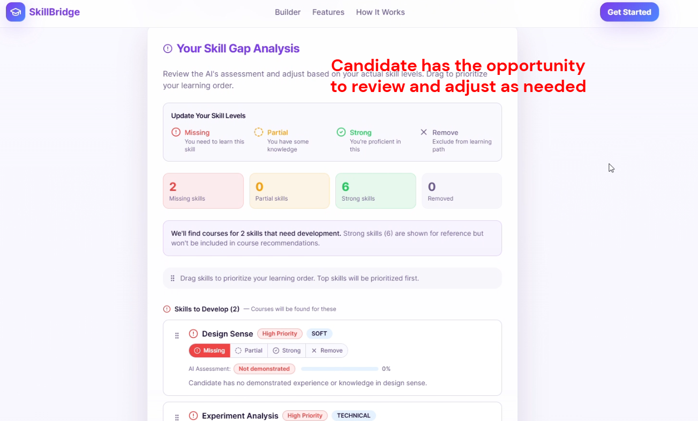
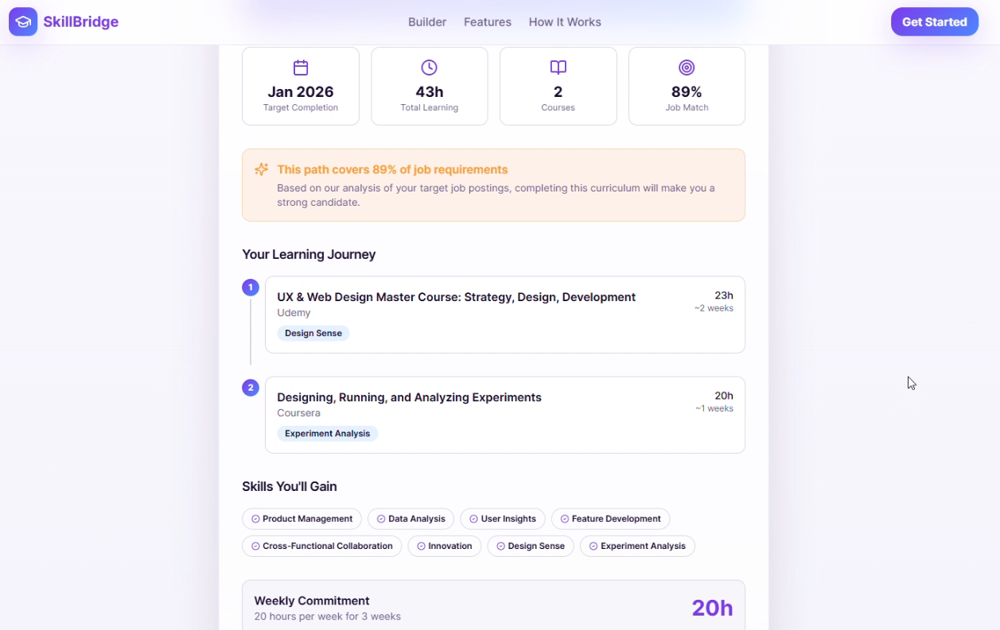

Job Fit Analysis App
Prototype that analyzes candidate-role fit, identifies skill gaps, and generates personalized learning paths optimized for time-to-value.
The Problem
Job seekers spend hours manually comparing their experience against job descriptions, often missing gaps they could close or strengths they should emphasize. The analysis is subjective, inconsistent, and doesn't scale across dozens of applications.
What I Built
A prototype that takes a candidate's resume and a job description, then uses 4 specialized AI agents to:
- Analyze fit: Map candidate experience against role requirements
- Identify gaps: Surface specific skill and experience gaps with severity ratings
- Generate learning paths: Recommend real courses and resources optimized for time-to-value (close the gap fastest)
- Prioritize: Rank gaps by how much they affect fit score, so candidates focus on what moves the needle most
Screenshots

Skill gap analysis: candidates review AI-assessed skill levels and adjust before generating a learning path.

Generated learning path: real courses ranked by time-to-value, with 89% job match score and weekly commitment estimate.
Tech Stack
Lovable
Front-end development and UI
Relevance.AI
4 specialized agent orchestration
What This Demonstrates
- AI prototyping speed: Built a working prototype using no-code/low-code AI tools
- Multi-agent architecture: Designed 4 agents with distinct roles working together
- Product thinking: Focused on time-to-value as the core metric for learning recommendations
- Eating my own cooking: Built this to solve my own job search problem, then generalized